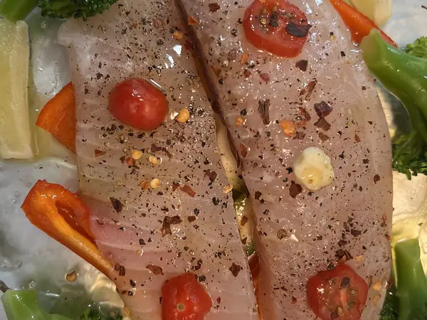

Фото: HaJunkiyada, CC BY-SA 4.0

Минтай в духовке с овощами
Филе минтая под слоем моркови, лука и помидоров со сметаной
50 мин4 порц.213 ккал на порциюБ 26 · Ж 9 · У 7Русская кухня
Продукты на 4 порц.
- Минтай600 г
- Лук репчатый1 шт
- Морковь1 шт
- Помидоры2 шт
- Сметана 20%4 ст. л.
- Сыр твёрдый по желаниюпо вкусу
- Соль1 ч. л.
- Перец чёрный молотый2 щеп.
- Растительное масло2 ч. л.
Как готовить
- Разморозьте филе в холодильнике, обсушите, нарежьте порционными кусками, посолите и поперчите.
- Лук нарежьте полукольцами, морковь натрите на крупной тёрке, помидоры кружками.
- Смажьте форму маслом, выложите рыбу, сверху лук и морковь, затем помидоры. Слегка посолите.
- Смажьте сметаной и по желанию посыпьте тёртым сыром.
- Запекайте при 180 °C (средний жар) 30 минут. Рыба готова, когда легко расслаивается вилкой и стала белой.
Совет. Не размораживайте минтай в тёплой воде, он станет водянистым. Овощи сверху сохраняют рыбу сочной.